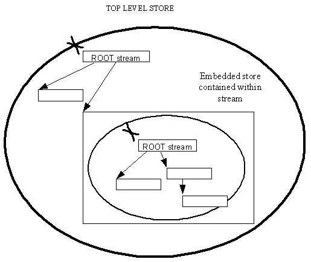

|
| |
Data contained in a stream can represent a store in its own right rather than just objects. Such a store is known as an embedded store.
The stream containing the embedded store is known as the host stream.
It is often convenient, and sometimes necessary, to collect the streams representing a partial object network into an embedded store. This makes it easier for the streams representing such a partial object network to be deleted, by deleting (from the top level store) the stream containing the embedded store.
The alternative is to traverse the individual streams representing the partial object network and deleting them in the correct sequence; this can be difficult.
The following diagram shows the idea:

An embedded store can contain an arbitrarily complex network of streams. As well as being easy to delete, this stream network can also be copied by simply copying the host stream from the containing store.
Embedded stores are persistent stores.
The embedded store is constructed on a write stream in its containing store and, for writing, the embedded store behaves like a direct file store — once streams within the embedded store have been committed and closed, they cannot subsequently be changed, i.e. streams cannot be replaced, deleted, extended or changed in any way.
Embedded stores are used for object embedding by the application architecture. Because the embedded store behaves like a direct file store, only document types with direct representations can be embedded. In particular, documents using permanent-type stores, such as the database or the agenda, cannot be embedded. Such documents may, however, contain any type of embeddable document.
Copyright ©2002 Symbian Ltd. 6.1-00174 |
|